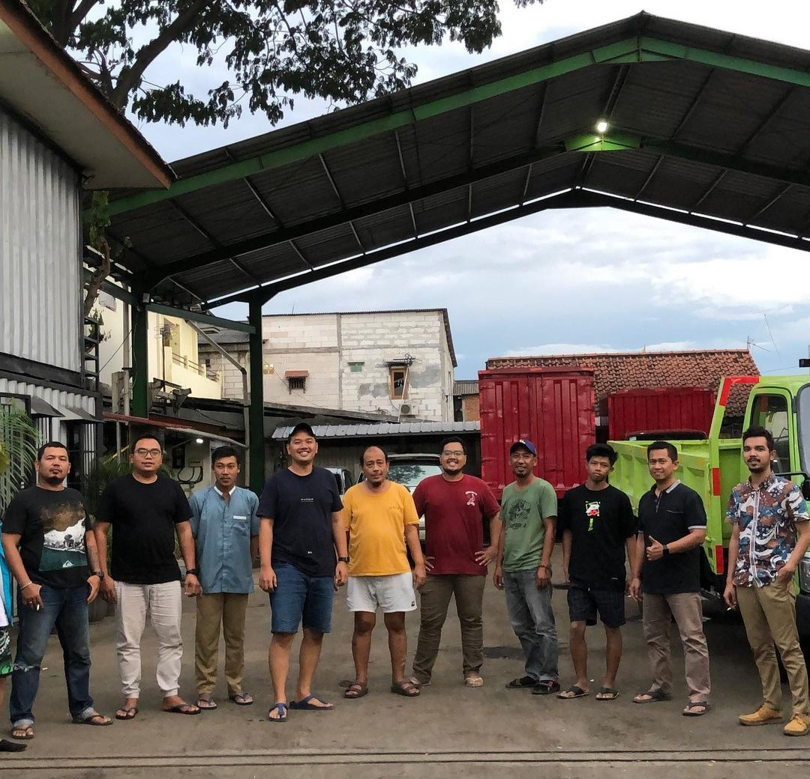
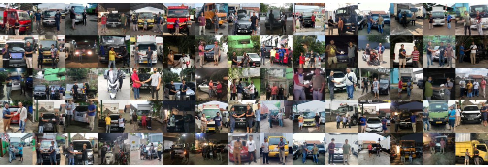
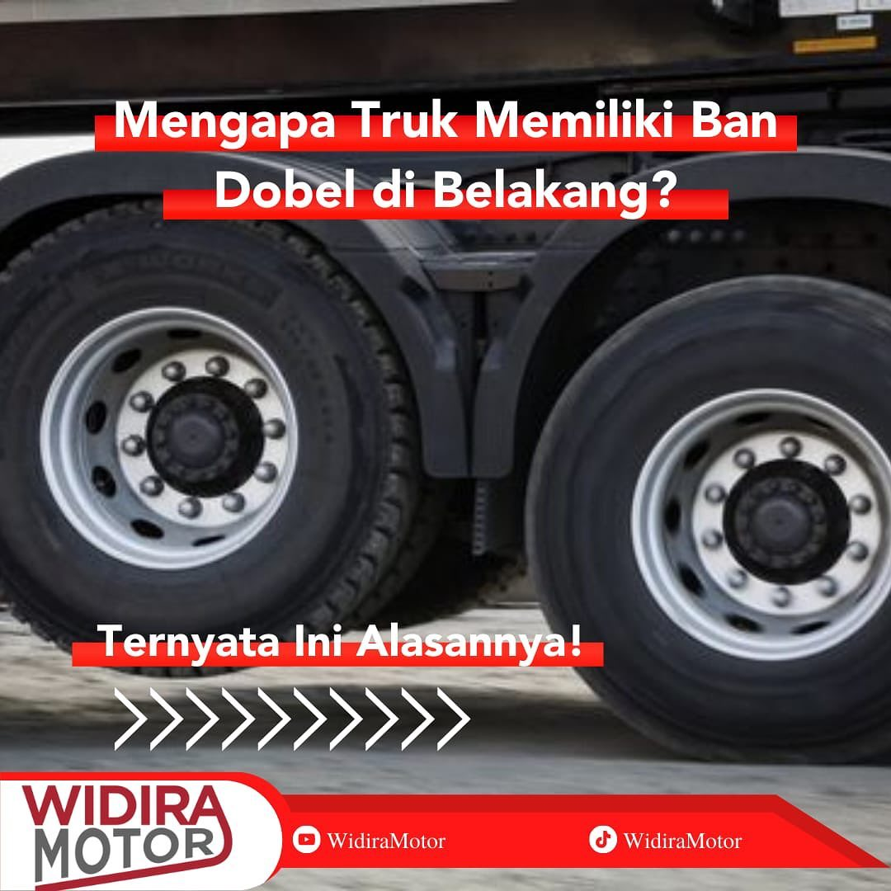

Tentang Kami

WIDIRA MOTOR 999 adalah dealer mobil terkemuka yang berlokasi di Jakarta. Dengan alamat terdaftar di Jl.
Raya Bekasi No.7, Cakung Tim., Jakarta Timur, Daerah Khusus Ibukota Jakarta 13910, perusahaan ini
menawarkan pengalaman berbelanja mobil yang unik dan memuaskan. Kami berkomitmen untuk memberikan layanan
terbaik kepada pelanggan dan menjadi mitra terpercaya dalam mewujudkan impian mereka memiliki mobil
idaman.

Layanan dan Produk
"Selamat datang di Pusat Penjualan Mobil Unggulan, tempat di mana Anda dapat menemukan berbagai pilihan
mobil baru dan bekas yang berasal dari merek-merek terkemuka di dunia. Kami bangga memberikan layanan
yang tidak hanya menjamin kehandalan, tetapi juga menawarkan kualitas terbaik dalam setiap kendaraan yang
kami sediakan di showroom kami.
Kami mengerti bahwa kendaraan adalah investasi besar bagi setiap pelanggan kami, oleh karena itu, setiap
mobil yang kami tawarkan telah melalui seleksi ketat untuk memastikan kualitasnya. Tak hanya itu, kami
juga menyediakan layanan bengkel resmi yang terpercaya, di mana Anda dapat menikmati perawatan dan
perbaikan mobil tingkat tinggi. Dengan staf profesional kami yang berpengalaman, Anda dapat memiliki
keyakinan bahwa kendaraan Anda akan dirawat dengan baik dan performanya akan tetap optimal.
Kami berkomitmen untuk memberikan pengalaman pelanggan yang luar biasa, tidak hanya saat pembelian,
tetapi juga dalam perjalanan panjang Anda bersama mobil impian. Jadilah bagian dari komunitas pelanggan
setia kami dan nikmati keberlanjutan performa kendaraan Anda dengan layanan terbaik dari bengkel resmi
kami. Terima kasih telah memilih kami sebagai mitra perjalanan Anda dalam menjelajahi jalan raya!
Visi Misi
visi
-
WIDIRA MOTOR 999 memandang masa depan sebagai dealer mobil terdepan yang melampaui sekadar
penjualan
kendaraan. Visi kami adalah menjadi pelopor solusi transportasi terbaik di Jakarta, memberikan
kontribusi nyata terhadap kemudahan hidup dan mobilitas di kota ini. Kami berkomitmen untuk tidak
hanya memenuhi kebutuhan pelanggan, tetapi juga menciptakan standar baru dalam layanan otomotif
yang
inovatif dan berdaya saing.
Sebagai dealer terkemuka, kami bercita-cita menjadi pusat excellence yang tidak hanya dikenal
karena
koleksi mobilnya yang luar biasa, tetapi juga sebagai pusat inovasi dalam memberikan solusi
transportasi yang ramah lingkungan, modern, dan efisien di Jakarta.
Misi
-
Pengalaman Belanja yang Memuaskan:
Menjadikan setiap kunjungan pelanggan sebagai pengalaman berbelanja yang tak terlupakan. Kami
berkomitmen untuk menciptakan atmosfer yang ramah, pengetahuan staf yang mendalam, dan pelayanan yang
responsif.
-
Kendaraan Berkualitas:
Memberikan akses kepada pelanggan untuk memiliki kendaraan berkualitas tinggi dari berbagai merek
terkemuka. Melalui seleksi yang ketat, kami menyajikan pilihan mobil baru dan bekas yang memenuhi
standar keamanan, kenyamanan, dan performa.
-
Mitra Handal dalam Perawatan Mobil:
Bukan hanya menjual kendaraan, tapi juga menjadi mitra sepanjang perjalanan kepemilikan mobil
pelanggan. Melalui bengkel resmi kami, kami menawarkan layanan perawatan dan perbaikan yang
berkualitas tinggi, menjaga kendaraan pelanggan dalam kondisi optimal.
Informasi Menarik

Ban ganda (double tire) di bagian belakang truk biasanya ditempatkan untuk meningkatkan stabilitas, daya
dukung beban, dan keamanan selama operasi. Berikut adalah beberapa alasan mengapa truk seringkali
dilengkapi dengan ban ganda di bagian belakang:
-
Dukungan Beban Lebih Baik:
Truk seringkali digunakan untuk mengangkut beban yang berat. Ban ganda memberikan lebih banyak
permukaan kontak dengan jalan, sehingga mampu mendistribusikan beban dengan lebih merata. Hal ini
membantu mengurangi tekanan pada setiap ban dan mencegah keausan yang tidak merata.
-
Stabilitas:
Ban ganda membantu meningkatkan stabilitas truk, terutama saat bermanuver atau saat truk sedang
berbelok. Dengan memberikan lebih banyak kontak dengan permukaan jalan, truk memiliki kestabilan
lateral yang lebih baik.
-
Keamanan:
Jika salah satu ban dari sepasang mengalami kerusakan atau kempis, truk masih dapat melanjutkan
perjalanan dengan ban yang lain. Hal ini meningkatkan keamanan karena mengurangi kemungkinan
kecelakaan karena kerusakan ban.
Komitmen Kami
WIDIRA MOTOR 999 berkomitmen untuk memberikan pengalaman berbelanja yang luar biasa dan menjadi mitra
yang dapat dipercaya dalam perjalanan kendaraan Anda. Terima kasih atas kepercayaan Anda kepada kami.